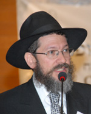

What is your name?
Rabbi Levi Garelik, who is named after the Rebbe’s father, Rabbi Levi Yitzchok Schneersohn, tells of his first yechidus with the Rebbe and how the Rebbe led him to connect the first “Levi,” the son of Yaakov, with the Rebbe’s father.

It was 13 Shevat 5728/1968. I had come from Italy a few weeks earlier to Crown Heights along with my mother and five brothers and sisters. On the day we were going to fly back to Italy, we all went to daven Mincha with the Rebbe. We arrived at 770 at 2:30 and stood in the anteroom, between the Rebbe’s room and the small zal (where the Rebbe davened on weekdays in those years), so that we could see the Rebbe when he came out for Mincha.
As we stood there, the Rebbe’s secretary R’ Chadakov passed by. He glanced at us and then entered the Rebbe’s room. He came out a short while later and said: The Rebbe wants you to come in now for yechidus. You can well imagine how surprised we were by this tremendous and unexpected z’chus.
First, the Rebbe spoke to my mother about various things. Then he asked my older sister some questions, and then he spoke to me in Yiddish. This was our conversation:
What is your name?
Levi Yitzchok.
What are you learning?
Chumash.
Which Chumash?
B’Reishis.
Which parsha?
Toldos.
What does the word “Toldos” mean?
The children.
Whose children?
Yitzchok’s.
Who was Yitzchok’s father?
Avrohom.
Who were Yitzchok’s children?
Yaakov and Eisav.
Who was more frum?
(Although I spoke Yiddish, I had not heard the word “frum” in Milano. I turned to my mother and asked her in Italian what the word meant. The Rebbe smiled and asked in Yiddish):
Who was better?
(I answered in astonishment) Yaakov!
Nu, so let’s talk about Yaakov. Do you know whether Yaakov had children?
Fortunately, during my visit to New York, I had gotten a puzzle of the twelve shvatim from my cousin and so I knew the names of the shvatim by heart. I said to the Rebbe: Of course.
Start saying them.
I began saying Reuven, Shimon, Levi, Yehuda, Yisachar, Z’vulun and the Rebbe picked up his hand and said: Enough.
What was the name of the third one?
Levi.
And what is your name?
Levi.
I don’t remember the Rebbe’s exact words but the gist of it was:
How is that possible – who is Levi? You or him?
I considered what the Rebbe might mean by this and answered:
Hashem created two Levis.
Who are you named for?
I knew that I was named for the Rebbe’s father because the elders of the community in Italy liked to call me “Berditchever Rav,” thinking that I was named for Rabbi Levi Yitzchok of Berditchev, and I always told them that I was not named for him, but for the Rebbe’s father.
When the Rebbe asked me who I was named for, I did not know what to say. I knew that I should say that I was named for his father, but I did not know how to express this respectfully. I knew how to say “your father” in Italian in a respectful way, but not in Yiddish. I finally said, “Der Rebbe’s tatte.”
The Rebbe smiled broadly and then asked me to come over to the desk. He took out a small Siddur with a T’hillim from his drawer and gave it to me as a gift.
Then the Rebbe spoke with the other children and towards the end, he spoke to my mother again about my chinuch, amongst other things. I think it was about when I would start learning Mishnayos.
When we left the yechidus, I went into the zal for Mincha and noticed that everyone was waiting for the Rebbe. I realized that we had been in the Rebbe’s room for at least half an hour.
THE COMMON DENOMINATOR BETWEEN YOSEF AND LEVI
As I said earlier, the first yechidus is especially important and I always wondered what the significance of that dialogue was. The Rebbe had brought me back to the first Levi in history, the son of Yaakov Avinu, and then wanted to know who I was named for. What was the connection?
It was only many years later, in 5740/1980, when the Rebbe said an entire sicha on Levi, a sicha printed in Likkutei Sichos Vol. 20 for Parshas VaYechi, that I came up with a possible explanation:
On the words of the verse, “and his children carried him,” referring to their carrying Yaakov’s casket to the Land of Canaan, Rashi says that Yaakov commanded them that Levi should not be one of the people carrying him since in the future he would carry the Aron. Yosef should not carry him because he is a king. Instead, Menasheh and Efraim replaced them. The Rebbe asks: Why is it that Levi should lose out in this mitzva of carrying his father’s casket because, in the future, his descendants will carry the Aron? Furthermore, Moshe Rabbeinu himself carried Yosef’s casket even though Moshe was one of the children of Kehos who carried the Aron. If Moshe Rabbeinu could carry Yosef’s aron, surely Levi, who lived a few generations earlier, could carry Yaakov’s aron!
The Rebbe explains that carrying Yaakov’s aron out of Egypt symbolizes the beginning of the servitude in Egypt, as Rashi says at the beginning of Parshas VaYechi, “Why is this parsha closed [without spaces between VaYigash and VaYechi]? Since Yaakov Avinu died, the eyes and hearts of B’nei Yisroel were closed due to the suffering of the servitude that began to enslave them.”
Levi and Yosef, though, represented the opposite of servitude. The Midrash says about Yosef that as long as he lived, the Jewish people did not experience the burden of Egypt, and Rashi says regarding Levi, “Why are Levi’s years counted? To tell us how long the enslavement was, for as long as one of the tribes was alive there was no servitude … and Levi lived the longest.” Furthermore, we find regarding Levi that even after the enslavement began, the tribe of Levi was exempt from working since they were constantly learning and teaching the people.
Because both Levi and Yosef represent a state of transcending galus, Yaakov told them not to carry his casket (something that indicates the beginning of the enslavement). Menasheh and Efraim would substitute for them, Menasheh instead of Yosef and Efraim instead of Levi.
What is the connection between Yosef-Menasheh and Levi-Efraim? The Rebbe explains that Menasheh symbolizes the estrangement from “my father’s house” (“G-d has caused me to forget all my toil and my father’s house.”). It makes a Jew conscious that he is not in his natural place, hence his longing to reconnect to “my father’s house.” This is the avoda of Yosef, that while being a king in Egypt he was above a state of galus and he constantly thought about “my father’s house.” As such, he represents the effort to transcend galus.
Efraim, on the other hand, represents the advantage of galus (“G-d made me fruitful in the land of my suffering.”). He finds the advantage within the darkness of galus to the extent of “fruitfulness.” This is the avoda of Levi, to transform the darkness of galus to light.
To summarize: Yosef is about being above galus and Levi is about working within galus and transforming it into Geula.
TWO PATHS TO GEULA
The Rebbe had two mentors, if we can refer to them as such: his father-in-law, the Rebbe Rayatz, and his father, Rabbi Levi Yitzchok. Both were named Yitzchok, which is a name that alludes to the future Geula. The Rebbe mentioned this many times, quoting the Gemara that in the future it will be said to Yitzchok, specifically, “you are our father,” and this is why the name Yitzchok is in the future tense, to allude to the Geula, “when our mouths will be filled with laughter.”
There are two ways to achieve Geula: Levi-Yitzchok or Yosef-Yitzchok. The Rebbe Rayatz led the way to Geula in the manner of a Nasi, a king, above any inyan of galus. R’ Levi Yitzchok led the way to Geula through living within galus.
Perhaps this is the reason that generally, when the Rebbe spoke about his father, he mentioned two things: 1) that he was a rav mora horaa, which is the inyan of the tribe of Levi to teach the Jewish people the way of Torah, as it says in Moshe’s blessing to the tribe of Levi, “Teach Your statutes to Yaakov and Your Torah to Yisroel,” and 2) that he died in exile, which is the inyan of “G-d made me fruitful in the land of my suffering.”
Today too, when we need to deal with the concealment that we experience, we can act in a way of Yosef and be above galus, or we can take Levi’s approach and be in galus and reveal the “Alef” which turns “gola” (exile) into Geula.
REVEALING THE GEULA WITHIN THE GALUS
Perhaps this is what the Rebbe meant to convey to me in my first yechidus when he asked me which Levi I was named for, but he guided me to the understanding that there is a Levi the son of Yaakov and another Levi, his father. This taught me that in order to understand the inyan of his father, R’ Levi Yitzchok, we need to learn the inyan of the first Levi, the son of Yaakov.
As the Rebbe himself explained about the first Levi, his inyan is to be above the galus, but not in a way that ignores the galus; rather, while being within galus to reveal the “G-d made me fruitful in the land of my suffering.” This is the “dwelling for G-d below.” This is why the original redeemer comes from the tribe of Levi as the Rebbe explains at length.
When you act in this way, by teaching the Jewish people and explaining the treasures contained within Chassidus, that the purpose of galus is that all future revelations depend on our actions while in galus (as is explained at length in Tanya, Chapter 37), we are certainly hastening the hisgalus of the Rebbe MH”M.
Rabbi Levi Yitzchok Garelik. "What is your name?." Beis Moshiach, no. 845 (August 9, 2012).